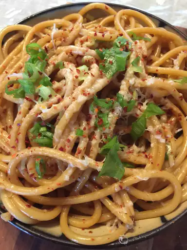

Kawach Noodles

Description
A special twist on the usual indomie noodles as cooked by my dear mother.
Ingredients
- 1 packet of Indomie noodles
- 1 packet of Sossi soya chunks
- 2 cups of Water
- 2 tablespoons of olive oil
- 3 sliced Tomatoes
- 2 onions
- Grated cheese
Steps
- Fry the onions and tomatoes in a pan
- Boil the indomie noodles in a separate pan
- Add the sossi chunks to the onions and tomato
- Add water to the mixture
- After the sossi chunks are well cooked add the noodles and mix thoroughly
- Serve hot with the grated cheese on top